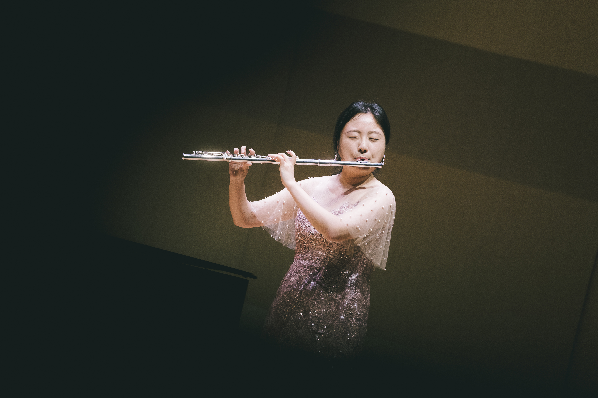

<title>배수현</title>
<meta name="claude:viewport-fit-sides" content="cover">
<link rel="preconnect" href="https://fonts.googleapis.com">
<link rel="preconnect" href="https://fonts.gstatic.com" crossorigin>
<link rel="stylesheet" href="https://fonts.googleapis.com/css2?family=Gowun+Batang:wght@400;700&family=IBM+Plex+Sans+KR:wght@400;500;600&family=IBM+Plex+Mono:wght@400;500&display=swap">
<style>
/* Layout: a single score-like column; five staff lines run behind the hero, sections read like movements of one piece. */
:root {
  --paper: #f3f4f1;      /* 악보 종이, 살짝 녹회색 */
  --surface: #fbfcfa;
  --ink: #1d2433;        /* 잉크 남색 */
  --muted: #5d6576;
  --line: #c9cdd1;       /* 오선 */
  --accent: #6b4a8f;     /* 전례 보라 */
  --accent-soft: #ece6f2;
  --brass: #9a7a2e;      /* 플룻 키의 금속빛 */
  --pink: #f6e3ea;       /* 파스텔 포인트 */
  --mint: #e1f0ea;
  --butter: #f7efd6;
  --rose: #c76b8a;
  --f-display: "Gowun Batang", "Nanum Myeongjo", "Batang", serif;
  --f-body: "IBM Plex Sans KR", "Apple SD Gothic Neo", "Malgun Gothic", sans-serif;
  --f-mono: "IBM Plex Mono", ui-monospace, "Consolas", monospace;
}
@media (prefers-color-scheme: dark) {
  :root:not([data-theme="light"]) {
    --paper: #14171e; --surface: #1b1f28; --ink: #e8e9ec; --muted: #a3a9b6;
    --line: #343a47; --accent: #b79ad6; --accent-soft: #2a2336; --brass: #d0b062;
    --pink: #35242c; --mint: #1f3029; --butter: #332c1b; --rose: #e59ab3;
    color-scheme: dark;
  }
}
:root[data-theme="dark"] {
  --paper: #14171e; --surface: #1b1f28; --ink: #e8e9ec; --muted: #a3a9b6;
  --line: #343a47; --accent: #b79ad6; --accent-soft: #2a2336; --brass: #d0b062;
    --pink: #35242c; --mint: #1f3029; --butter: #332c1b; --rose: #e59ab3;
  color-scheme: dark;
}

* { box-sizing: border-box; }
body {
  background: var(--paper);
  color: var(--ink);
  font-family: var(--f-body);
  font-size: 1rem;
  line-height: 1.75;
  padding-left: max(16px, env(safe-area-inset-left, 0px));
  padding-right: max(16px, env(safe-area-inset-right, 0px));
  padding-block: 0 4rem;
}
.wrap { max-width: 46rem; margin: 0 auto; display: grid; gap: 4.5rem; }
h1, h2, h3 { font-family: var(--f-display); font-weight: 700; text-wrap: balance; margin: 0; }
p { margin: 0; }
a { color: var(--accent); }
a:focus-visible { outline: 2px solid var(--accent); outline-offset: 3px; border-radius: 2px; }

.label {
  font-family: var(--f-mono);
  font-size: 0.75rem;
  letter-spacing: 0.12em;
  text-transform: uppercase;
  color: var(--brass);
}

/* Hero */
.hero { position: relative; padding-block: 4.5rem 0; display: grid; gap: 1.25rem; }
.staff { position: absolute; inset: 3.2rem 0 auto 0; height: 7.5rem; pointer-events: none;
  background: repeating-linear-gradient(to bottom, var(--line) 0 1px, transparent 1px 1.5rem);
  opacity: .7; mask-image: linear-gradient(to right, transparent, #000 15%, #000 85%, transparent); -webkit-mask-image: linear-gradient(to right, transparent, #000 15%, #000 85%, transparent); }
.hero > *:not(.staff) { position: relative; }
.hero h1 { font-size: clamp(3.2rem, 12vw, 5.5rem); line-height: 1.05; letter-spacing: -0.01em; }
.hero h1 .en { display: block; font-family: var(--f-mono); font-weight: 400; font-size: 0.875rem; letter-spacing: 0.2em; color: var(--muted); margin-top: .75rem; }
.id { display: flex; align-items: center; gap: 1.75rem; }
.id h1 { min-width: 0; }
/* 가로 사진에서 얼굴과 플룻이 보이는 부분만 원 안에 보이게 확대 */
.me { position: relative; flex: none; width: 9rem; height: 9rem; border-radius: 50%; overflow: hidden; border: 3px solid var(--brass); background: var(--ink); }
.me img { position: absolute; max-width: none; width: 250%; height: auto; left: -95%; top: -17%; }
.roles { display: flex; flex-wrap: wrap; gap: .5rem; padding: 0; margin: .5rem 0 0; list-style: none; }
.roles li { font-size: .875rem; font-weight: 500; padding: .3rem .8rem; border: 1px solid var(--line); border-radius: 999px; background: var(--surface); }
.roles li:first-child { border-color: var(--accent); color: var(--accent); }

/* Sections */
section { display: grid; gap: 1.5rem; }
.sec-head { display: grid; gap: .35rem; border-top: 1px solid var(--line); padding-top: 1.25rem; }
.sec-head h2 { font-size: 1.75rem; }
.lead { font-size: 1.0625rem; max-width: 36em; }
.lead + .lead { margin-top: -.5rem; color: var(--muted); }

.works { display: grid; gap: 1rem; }
.work { display: grid; grid-template-columns: 7.5rem 1fr; gap: 1.25rem; padding-block: 1.25rem; border-bottom: 1px dashed var(--line); }
.work:last-child { border-bottom: 0; }
.work .when { font-family: var(--f-mono); font-size: .8125rem; color: var(--muted); padding-top: .3rem; }
.work .body { min-width: 0; display: grid; gap: .5rem; }
.work h3 { font-size: 1.25rem; }
.tags { display: flex; flex-wrap: wrap; gap: .4rem; margin-top: .25rem; }
.tags span { font-family: var(--f-mono); font-size: .75rem; padding: .15rem .55rem; background: var(--accent-soft); color: var(--accent); border-radius: 4px; }
.who { display: flex; align-items: center; gap: .9rem; }
.who h3 { min-width: 0; }
.avatar { flex: none; width: 4rem; height: 4rem; border-radius: 50%; overflow: hidden; border: 2px solid var(--accent); }
.avatar img { width: 100%; height: 100%; object-fit: cover; object-position: center 30%; display: block; }
.chan { justify-self: start; font-family: var(--f-mono); font-size: .8125rem; text-underline-offset: 3px; }
.work.seeking { background: var(--surface); border: 1px solid var(--accent); border-radius: 10px; padding: 1.25rem; }

/* Flute card */
.flute { background: var(--surface); border: 1px solid var(--line); border-radius: 10px; padding: 1.5rem; display: grid; gap: 1.25rem; }
.flute dl { display: grid; grid-template-columns: repeat(3, minmax(0, 1fr)); gap: 1rem; margin: 0; }
.flute dt { font-size: .8125rem; color: var(--muted); }
.flute dd { margin: .15rem 0 0; font-family: var(--f-display); font-size: 1.25rem; font-weight: 700; }
.range { height: 6px; border-radius: 3px; background: linear-gradient(to right, var(--line), var(--brass) 30%, var(--accent)); }
.range-ticks { display: flex; justify-content: space-between; font-family: var(--f-mono); font-size: .75rem; color: var(--muted); margin-top: .4rem; }

/* Contact */
.contact { display: grid; gap: .75rem; }
.contact .row { display: grid; grid-template-columns: 6rem 1fr; gap: 1rem; align-items: baseline; padding-block: .6rem; border-bottom: 1px solid var(--line); }
.contact .k { font-family: var(--f-mono); font-size: .8125rem; color: var(--muted); }
.contact .v { min-width: 0; overflow-wrap: anywhere; user-select: all; }
.contact .v.todo { color: var(--muted); font-style: italic; user-select: auto; }

footer { font-family: var(--f-mono); font-size: .75rem; color: var(--muted); }

/* Decor: 파스텔 빛, 떠다니는 음표, 둥근 카드 */
.hero::before { content: ""; position: absolute; inset: 1rem -2rem -1rem -2rem; z-index: 0; pointer-events: none;
  background:
    radial-gradient(14rem 10rem at 12% 55%, var(--pink), transparent 70%),
    radial-gradient(16rem 11rem at 85% 35%, var(--accent-soft), transparent 70%),
    radial-gradient(12rem 8rem at 60% 95%, var(--butter), transparent 70%); }
.notes { position: absolute; inset: 0; pointer-events: none; z-index: 1; }
.notes span { position: absolute; font-family: var(--f-display); color: var(--accent); opacity: .55; animation: bob 4s ease-in-out infinite; }
.notes span:nth-child(1) { top: 3.5rem; right: 8%; font-size: 1.6rem; }
.notes span:nth-child(2) { top: 7.5rem; right: 22%; font-size: 1.1rem; color: var(--rose); animation-delay: -1.3s; }
.notes span:nth-child(3) { top: 11rem; right: 4%; font-size: 1.3rem; color: var(--brass); animation-delay: -2.6s; }
.notes span:nth-child(4) { top: 2.2rem; right: 35%; font-size: .9rem; color: var(--brass); animation-delay: -.7s; }
@keyframes bob { 0%, 100% { transform: translateY(0) rotate(-6deg); } 50% { transform: translateY(-8px) rotate(6deg); } }
@media (prefers-reduced-motion: reduce) { .notes span { animation: none; } }

.me { outline: 2px dashed var(--rose); outline-offset: 5px; }
.roles li { border: 0; background: var(--pink); }
.roles li:nth-child(2) { background: var(--butter); }
.roles li:nth-child(3) { background: var(--accent-soft); }
.roles li:nth-child(4) { background: var(--mint); }
.roles li::before { content: "♪"; margin-right: .35rem; color: var(--rose); }
.roles li:first-child { color: var(--ink); }

.sec-head { border-top: 2px dotted var(--line); }
.sec-head .label::before { content: "♫ "; color: var(--rose); }

.works { gap: 1rem; }
.work { border: 0; border-radius: 18px; padding: 1.25rem 1.5rem; background: var(--pink); transition: transform .2s ease; }
.work:nth-child(2) { background: var(--accent-soft); }
.work:hover { transform: translateY(-3px); }
.work .tags span { background: var(--surface); }
.work.seeking { background: var(--butter); border: 2px dashed var(--brass); border-radius: 18px; }
.flute { border: 0; border-radius: 18px; background: linear-gradient(135deg, var(--mint), var(--surface) 60%, var(--butter)); }
.range { height: 8px; border-radius: 4px; background: linear-gradient(to right, var(--mint), var(--brass) 35%, var(--rose) 70%, var(--accent)); }
footer::after { content: " ♪"; color: var(--rose); }
@media (prefers-reduced-motion: reduce) { .work { transition: none; } .work:hover { transform: none; } }

@media (max-width: 560px) {
  .work { padding: 1.1rem 1.15rem; }
  .notes span:nth-child(2), .notes span:nth-child(4) { display: none; }
  .wrap { gap: 3.5rem; }
  .id { flex-direction: column; align-items: flex-start; gap: 1.25rem; }
  .me { width: 7.5rem; height: 7.5rem; }
  .work { grid-template-columns: 1fr; gap: .4rem; }
  .flute dl { grid-template-columns: 1fr 1fr; }
  .contact .row { grid-template-columns: 1fr; gap: .1rem; }
}
</style>

<main class="wrap">
  <header class="hero">
    <div class="staff" aria-hidden="true"></div>
    <div class="notes" aria-hidden="true"><span>♪</span><span>♫</span><span>♩</span><span>✦</span></div>
    <span class="label">Flutist · Accompanist · Live Manager</span>
    <div class="id">
      <div class="me"></div>
      <h1>배수현<span class="en">BAE SU-HYUN</span></h1>
    </div>
    <ul class="roles">
      <li>플룻 전공</li>
      <li>성당 반주 (프리랜서)</li>
      <li>유튜브 라이브 매니저</li>
      <li>취업 준비 중</li>
    </ul>
  </header>

  <section aria-labelledby="about">
    <div class="sec-head">
      <span class="label">About</span>
      <h2 id="about">안녕하세요, 배수현입니다</h2>
    </div>
    <p class="lead">플룻을 전공했고, 악기 연주가 가장 큰 즐거움입니다. 2023년 6월부터 만촌1동성당에서 미사 반주를 하고 있으며, 2026년 8월부터는 유튜브 채널 ‘준기’의 실시간 라이브와 콘텐츠 준비를 돕고 있습니다.</p>
    <p class="lead">무대 위 연주와 화면 뒤 운영, 두 가지 현장에서 쌓은 경험을 바탕으로 새로운 자리를 찾고 있습니다.</p>
  </section>

  <section aria-labelledby="work">
    <div class="sec-head">
      <span class="label">Work</span>
      <h2 id="work">지금 하는 일</h2>
    </div>
    <div class="works">
      <article class="work">
        <div class="when">2023.06 – 현재<br>프리랜서</div>
        <div class="body">
          <h3>만촌1동성당 반주자</h3>
          <p>만촌1동성당에서 미사와 전례에 맞춰 성가를 반주합니다. 입당부터 파견까지 전례의 흐름을 따라가며, 성가대와 회중의 호흡에 맞추는 연주를 합니다.</p>
          <div class="tags"><span>입당송</span><span>봉헌</span><span>영성체</span><span>파견</span></div>
        </div>
      </article>
      <article class="work">
        <div class="when">2026.08 – 현재<br>매니저</div>
        <div class="body">
          <div class="who">
            <a class="avatar" href="https://www.youtube.com/@p.h66" target="_blank" rel="noopener"></a>
          <h3>유튜브 <a href="https://www.youtube.com/@p.h66" target="_blank" rel="noopener">‘준기’</a> 채널 라이브 · 콘텐츠 매니저</h3>
          </div>
          <p>유튜브 채널 ‘준기’의 실시간 방송이 매끄럽게 진행되도록 옆에서 운영을 돕고, 방송 전 콘텐츠 기획과 준비를 함께합니다.</p>
          <div class="tags"><span>라이브 운영</span><span>채팅 관리</span><span>큐시트</span><span>콘텐츠 준비</span></div>
          <a class="chan" href="https://www.youtube.com/@p.h66" target="_blank" rel="noopener">youtube.com/@p.h66 ↗</a>
        </div>
      </article>
      <article class="work seeking">
        <div class="when">Now</div>
        <div class="body">
          <h3>새로운 기회를 찾고 있습니다</h3>
          <p>음악적 감각과 방송 현장 운영 경험을 함께 살릴 수 있는 일에 관심이 많습니다. 함께 일할 기회가 있다면 아래 연락처로 편하게 연락 주세요.</p>
        </div>
      </article>
    </div>
  </section>

  <section aria-labelledby="music">
    <div class="sec-head">
      <span class="label">Music</span>
      <h2 id="music">플룻과 함께</h2>
    </div>
    <div class="flute">
      <dl>
        <div><dt>전공</dt><dd>플룻</dd></div>
        <div><dt>취미</dt><dd>악기 연주</dd></div>
        <div><dt>2023.06 – 현재</dt><dd>만촌1동성당 반주</dd></div>
      </dl>
      <div>
        <div class="range" aria-hidden="true"></div>
        <div class="range-ticks"><span>C4</span><span>플룻의 음역</span><span>C7</span></div>
      </div>
    </div>
  </section>

  <section aria-labelledby="contact">
    <div class="sec-head">
      <span class="label">Contact</span>
      <h2 id="contact">연락처</h2>
    </div>
    <div class="contact">
      <div class="row"><span class="k">EMAIL</span><span class="v">shhyun1235@naver.com</span></div>
      <div class="row"><span class="k">INSTAGRAM</span><a class="v" href="https://www.instagram.com/mu_hyun12/" target="_blank" rel="noopener">@mu_hyun12 ↗</a></div>
    </div>
  </section>

  <footer>© 2026 배수현</footer>
</main>
